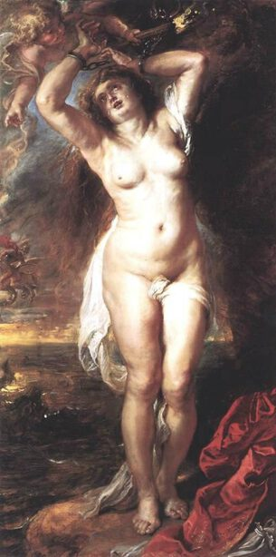

Peter Paul Rubens,1577 - 1640,Baroque,Flemish,"Sir Peter Paul Rubens (; Dutch: [ˈrybə(n)s]; 28 June 1577 – 30 May 1640) was a Flemish artist. He is considered the most influential artist of Flemish Baroque tradition. Rubens's highly charged compositions reference erudite aspects of classical and Christian history. His unique and immensely popular Baroque style emphasized movement, color, and sensuality, which followed the immediate, dramatic artistic style promoted in the Counter-Reformation. Rubens specialized in making altarpieces, portraits, landscapes, and history paintings of mythological and allegorical subjects.",http://en.wikipedia.org/wiki/Peter_Paul_Rubens,141
